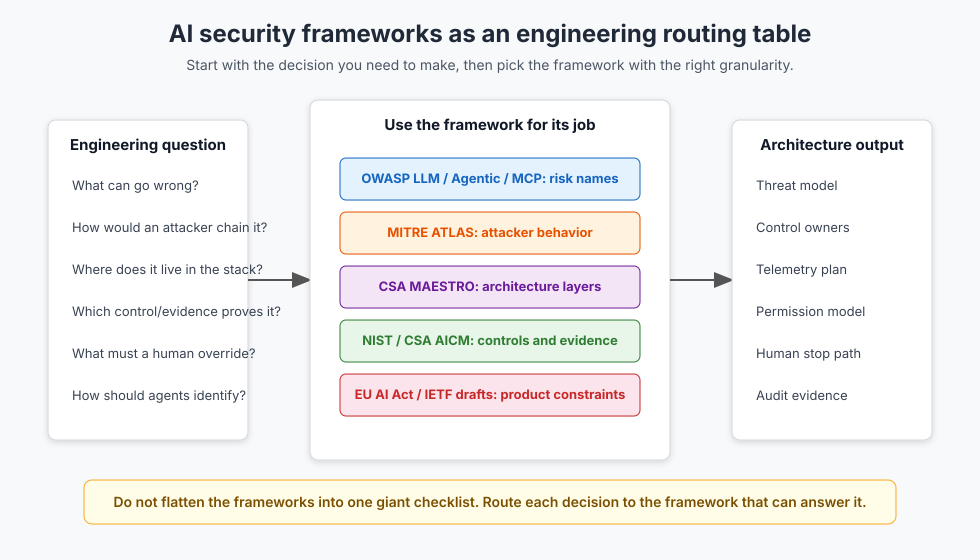

AI Security Frameworks for Engineers: OWASP, MITRE ATLAS, NIST, CSA, and the EU AI Act
AI security frameworks have multiplied faster than most teams can absorb them. OWASP has a Top 10 for LLM apps, another one for agentic applications, and now an MCP Top 10. MITRE ATLAS keeps expanding its matrix for AI-enabled systems. NIST has the AI RMF profile for generative AI, a Cyber AI Profile draft, and an AI Agent Standards Initiative. CSA has MAESTRO and the AI Controls Matrix. The EU AI Act adds legal requirements around oversight for high-risk systems.
The common failure mode is trying to collapse all of that into one master spreadsheet. That looks serious and produces almost nothing. The useful move is simpler: treat the frameworks as a routing table for engineering decisions.
TL;DR: Use OWASP to name risks, MITRE ATLAS to model attacker behavior, CSA MAESTRO to place threats in the agent stack, NIST and CSA AICM to assign controls and evidence, EU AI Act Article 14 to design human oversight when the system is high-risk, and the IETF agent-auth draft as a signal that agent identity is still active standards work.
The routing table
Security reviews get sloppy when every framework is asked to do every job. OWASP is not a governance system. MITRE ATLAS is not a product-requirements document. The EU AI Act is not a threat model. NIST will not tell you whether your MCP server should expose delete_customer.
Start with the question in front of you.

| Engineering question | Best starting point | Output you should expect |
|---|---|---|
| What can go wrong in this LLM or agent app? | OWASP LLM Top 10, OWASP Agentic Top 10, OWASP MCP Top 10 | Risk names and review prompts |
| How would an attacker chain the behavior? | MITRE ATLAS | Attack path, red-team scenario, detection idea |
| Where does the threat live in the agent stack? | CSA MAESTRO | Layered threat model |
| Which controls and evidence do we need? | NIST AI 600-1, NIST IR 8596, CSA AICM | Control owners, evidence, audit artifacts |
| What must a human be able to see, override, or stop? | EU AI Act Article 14 | Product and operating requirements |
| How should agents authenticate and authorize? | NIST AI Agent Standards Initiative, IETF draft-klrc-aiagent-auth |
Identity architecture assumptions, with caveats |
This sounds obvious until a real review starts. Someone asks whether a prompt-injection mitigation is "NIST compliant." Someone else maps every OWASP item to the same generic logging control. A third person says "human in the loop" when the product only has a Slack notification after the action already happened.
That is how framework work becomes decorative.
OWASP gives you names for risks
OWASP is the easiest place to start because it gives teams a shared vocabulary. The 2025 OWASP Top 10 for LLM Applications covers the familiar LLM app risks: prompt injection, sensitive information disclosure, supply chain issues, data and model poisoning, improper output handling, excessive agency, system prompt leakage, vector and embedding weakness, misinformation, and unbounded consumption.
The Agentic Top 10 moves the discussion from model calls to autonomous systems. OWASP describes the 2026 agentic list as a peer-reviewed framework for autonomous and agentic AI systems, developed with input from more than 100 experts and practitioners. That matters because agents fail differently from chatbots. They plan, call tools, persist memory, coordinate with services, and take actions that survive the conversation.
The MCP Top 10 is narrower and more implementation-specific. Its list includes token mismanagement, privilege escalation through scope creep, tool poisoning, supply-chain tampering, command execution, intent-flow subversion, weak authentication and authorization, audit gaps, shadow MCP servers, and context over-sharing.
That is where OWASP is strongest: naming the thing so the team stops arguing at the wrong abstraction level.
Use OWASP in architecture review like this:
Risk: MCP03 Tool Poisoning
System surface: third-party MCP server registry and tool descriptions
Failure mode: model sees a trusted tool schema that was changed after review
Engineering question: how do we pin, sign, diff, and re-approve tools?
Evidence: registry allowlist, schema hash, release review, runtime tool-call logs
What OWASP will not do by itself is finish the design. "Mitigate excessive agency" is not a control. You still have to decide which permissions are granted, which actions need approval, how revocation works, where logs land, and what happens when an agent ignores the expected path.
MITRE ATLAS turns risk names into attacker behavior
OWASP tells you the category. MITRE ATLAS helps you ask how an adversary would actually move.
MITRE describes ATLAS as a living knowledge base of adversary tactics and techniques against AI-enabled systems, based on real-world attack observations and demonstrations from AI red teams and security groups. The current public matrix includes AI-specific and agentic techniques such as prompt infiltration, RAG poisoning, AI agent tool poisoning, credential harvesting from agent configuration, malicious tool publication, and model or artifact compromise.
That is useful for two reasons.
First, it gives red teams better scenarios than "try prompt injection." For example:
Scenario: poisoned customer-support knowledge base
Initial behavior: adversary gets malicious instructions indexed into retrieval
Agent behavior: agent retrieves the content during a support workflow
Execution behavior: agent calls CRM and email tools under trusted context
Impact: customer data leaves through a normal-looking support response
Second, it gives detection teams something to instrument. "Prompt injection" is too broad. "Unexpected tool invocation after retrieval from a newly indexed source" is observable. So is "tool schema changed without approval," "agent credential used outside the expected workflow," or "high-risk action attempted after low-confidence retrieval."
ATLAS is not a substitute for your architecture. It is a way to pressure-test the architecture against adversary behavior.
CSA MAESTRO places the threat in the agent stack
Traditional threat models often flatten agent systems into three boxes: app, model, tool. That loses too much.
CSA's MAESTRO framework takes a layered approach to agentic AI threat modeling. The CSA overview presents it as a seven-layer reference architecture for agentic systems, spanning foundation models, data operations, agent frameworks, deployment infrastructure, evaluation and observability, security and compliance, and the broader agent ecosystem.
That layered view is handy because the same incident can cross several layers.
Take a support agent with email, CRM, retrieval, and an MCP filesystem tool:
| MAESTRO layer | Review question |
|---|---|
| Foundation model | Does the model follow external instructions over system policy under adversarial context? |
| Data operations | Can retrieved content carry hidden instructions, stale policy, or poisoned facts? |
| Agent framework | Does the planner separate user intent, retrieved evidence, and tool policy? |
| Deployment infrastructure | Are tools sandboxed, rate-limited, and scoped per task? |
| Evaluation and observability | Can we replay the trace and see why the action happened? |
| Security and compliance | Who owns approval, retention, access review, and incident handling? |
| Agent ecosystem | Can third-party tools, registries, or other agents impersonate trusted components? |
This is the piece most teams miss. They say "we have a guardrail" and mean an input/output filter around the model. But the risk may live in retrieval, tool identity, runtime containment, approval design, or auditability. A layered model keeps that from being hidden under one generic control.
NIST and CSA AICM turn risk into evidence
NIST is where the discussion becomes less exciting and more useful.
NIST AI 600-1 is the Generative AI Profile for the AI Risk Management Framework. It frames generative AI risk across governance, mapping, measurement, and management, and it calls out issues such as confabulation, data privacy, information security, human-AI configuration, value-chain integration, and incident disclosure. NIST IR 8596, the Cyber AI Profile draft, narrows the lens to cybersecurity and organizes the work around securing AI system components, conducting AI-enabled cyber defense, and thwarting AI-enabled cyber attacks.
Those documents are not quick checklists. They are better used as forcing functions:
- What risk are we accepting, and who accepted it?
- Which controls are preventive, detective, and corrective?
- What evidence proves the control ran?
- Which incidents get disclosed, escalated, or replayed?
- Which supplier, model, dataset, tool, and runtime dependencies are in scope?
CSA's AI Controls Matrix makes that more operational. CSA says AICM contains 243 control objectives across 18 domains and maps to standards including ISO 42001, ISO 27001, NIST AI RMF 1.0, NIST AI 600-1, and the EU AI Act. That is where a security architecture review can become an evidence plan.
For an agent with production write permissions, a useful control row is not:
Control: agent security
Status: implemented
Evidence: docs
It should look more like this:
Control: task-scoped authorization for agent tool calls
Owner: platform security
Preventive evidence: policy bundle and allowed action matrix
Detective evidence: signed tool-call logs with user, agent, task, tool, and approval state
Corrective evidence: revocation runbook and quarterly access review
Residual risk: agent can still select the wrong allowed action if upstream context is poisoned
Linked risks: OWASP LLM01, OWASP LLM06, OWASP MCP02, OWASP MCP07
That is the difference between governance and paperwork. Governance can be tested.
EU AI Act Article 14 is a design constraint
If your system is high-risk under the EU AI Act, human oversight is not a meeting topic. It is a product requirement.
Article 14 says high-risk AI systems must be designed so natural persons can effectively oversee them during use. The Commission's AI Act Service Desk text also spells out concrete capabilities: humans should be able to understand relevant capacities and limitations, monitor operation, interpret output, disregard or override output, and intervene or interrupt the system through a stop button or similar safe-state procedure.
Even when a product is not high-risk, the design pattern is useful for agents.
"Human in the loop" is too vague. Ask these questions instead:
- What does the human see before the action?
- Can the human understand why the agent wants to act?
- Which actions can the human override?
- Which actions require approval before execution?
- Can the human stop a running workflow safely?
- Does the system record the decision, reason, and operator?
- Does the stop path work when the model, queue, browser, or tool runner is unhealthy?
A post-action notification does not satisfy the spirit of oversight for a high-consequence action. It may help with audit, but it does not let a human prevent the action.
Agent identity is still moving
Agent identity is where the ground is still soft.
NIST created the AI Agent Standards Initiative in February 2026 to foster industry-led standards, community-led protocols, research, agent authentication, identity infrastructure, and security evaluations. Around the same time, the IETF draft-klrc-aiagent-auth work started proposing best practices for AI agent authentication and authorization.
The important caveat: the IETF document is an Internet-Draft. The Datatracker page says Internet-Drafts are working documents, are not endorsed by the IETF, and have no formal standing in the standards process. The current draft explicitly tries to use existing standards such as workload identity and OAuth 2.0 rather than invent a separate authentication universe for agents.
That is the right instinct for production systems. Treat agents as workloads with delegated authority, not as magical users.
At minimum, an agent identity design should answer:
- Is the agent acting as itself, as a user delegate, or as a service account?
- Which human or system authorized the task?
- Which scopes are task-local rather than permanently attached?
- Can credentials be rotated and revoked while a workflow is running?
- Are tool calls tied to a trace, approval, and policy version?
- Can downstream systems distinguish "Slava clicked this" from "an agent acting for Slava requested this"?
This is not solved by putting the user's API key in the agent runtime. That makes audit worse, not better.
A practical review flow
Here is the review flow I would use for a production support agent that can read tickets, retrieve policy, update CRM records, draft email, and call MCP tools.
1. Name the risks with OWASP
Start with OWASP and mark the relevant risks. For this agent, the obvious ones are prompt injection, sensitive information disclosure, excessive agency, system prompt leakage, vector and embedding weakness, MCP token exposure, scope creep, tool poisoning, command execution, weak auth, telemetry gaps, and context over-sharing.
Do not spend a week arguing about the perfect label. Pick the labels that make the architecture discussion concrete.
2. Build two attacker paths with MITRE ATLAS
Write two paths in normal language.
Path A: poisoned retrieval
1. Attacker gets malicious content into a ticket or help-center article.
2. Agent retrieves it during a normal support flow.
3. Retrieved text instructs the agent to expose account data.
4. Agent calls CRM under valid task credentials.
5. Agent sends the response through email.
Path B: tool registry compromise
1. A trusted MCP server package changes its tool schema.
2. The new schema hides a broader side effect behind a normal-looking name.
3. Agent planner chooses the tool during a routine workflow.
4. Tool executes with broader privileges than the task needs.
5. Logs show a valid tool call, but not the malicious semantic drift.
Now the team has something to test.
3. Place each path in MAESTRO
For the poisoned retrieval path, the threat starts in data operations, crosses the agent framework, then lands in deployment infrastructure and the agent ecosystem. For the registry compromise path, it starts in the ecosystem and supply chain, then crosses the framework and runtime.
This placement matters because different teams own the controls. Search infrastructure may own ingestion filters. Platform security may own tool identity. The agent team may own planner separation. SRE may own trace retention and replay.
4. Assign controls with NIST and AICM
Turn each threat into evidence.
For poisoned retrieval:
- ingestion provenance and source trust labels
- retrieval-time source display
- instruction/data separation in the prompt builder
- action policy that ignores retrieved instructions for permissions
- eval cases with malicious tickets and documents
- trace logs showing retrieved chunks, policy decisions, approvals, and tool calls
For tool registry compromise:
- allowlisted MCP servers
- schema diff review
- signed package or container provenance
- pinned versions for production
- runtime tool-call policy
- alert on new tool names, changed descriptions, broadened scopes, or unexpected side effects
5. Add oversight where consequences justify it
If the agent can send external email, modify billing records, close accounts, move money, delete data, or change access, define approval and stop paths explicitly.
The oversight design should be boring:
Action: refund customer
Risk tier: high
Pre-action approval: required above threshold
Human view: ticket summary, retrieved policy, proposed action, amount, affected account
Override: approve, edit, reject
Stop path: cancel queued action and revoke task credentials
Evidence: approver, timestamp, reason, policy version, final tool call
That is a product design. "Manager review available" is a sentence.
Where teams usually go wrong
The first mistake is mapping everything to everything. You get a giant matrix where each row says "logging," "RBAC," or "policy." Nobody can tell whether the system is safer.
The second mistake is treating draft material as settled standards. The IETF agent-auth draft is useful, but it is still a draft. NIST's agent standards work is a signal and a convening point, not a drop-in implementation spec.
The third mistake is assuming compliance language means the system has a working runtime control. A policy that says tools should be least privilege is not the same thing as task-scoped credentials, a denied action log, and a revocation path.
The fourth mistake is leaving humans with responsibility but no controls. If a human is accountable for oversight, give them pre-action context, authority, and a working stop mechanism. Otherwise the system has assigned blame, not oversight.
Key Takeaways
- Use OWASP to name AI and agent risks. It gives the team a shared vocabulary, not a complete architecture.
- Use MITRE ATLAS to turn vague risks into adversary paths, red-team tests, and detection ideas.
- Use CSA MAESTRO to place threats in the agent stack so ownership is clear.
- Use NIST AI 600-1, NIST IR 8596, and CSA AICM to turn risks into controls, evidence, and operating procedures.
- Treat EU AI Act Article 14 as a concrete oversight design pattern: monitor, interpret, override, and stop.
- Treat agent identity standards as active work. Build on workload identity, OAuth-style delegation, traceability, revocation, and task-scoped authorization.
References
- OWASP Top 10 for LLM Applications 2025
- OWASP Top 10 for Agentic Applications 2026
- OWASP MCP Top 10
- MITRE ATLAS
- NIST AI 600-1: Artificial Intelligence Risk Management Framework: Generative Artificial Intelligence Profile
- NIST IR 8596: Cybersecurity Framework Profile for Artificial Intelligence
- NIST AI Agent Standards Initiative
- IETF draft-klrc-aiagent-auth: AI Agent Authentication and Authorization
- CSA AI Controls Matrix
- CSA MAESTRO: Agentic AI Threat Modeling Framework
- EU AI Act Article 14: Human oversight